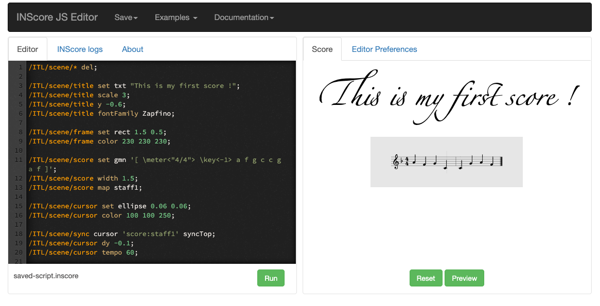
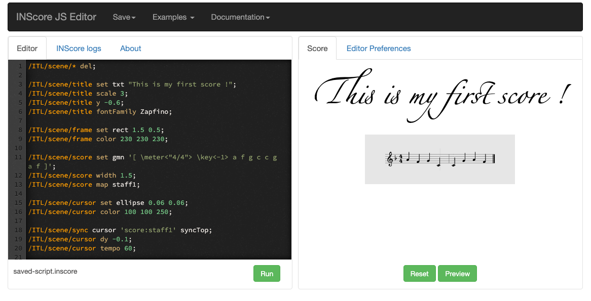
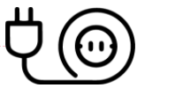

Participation and registration to TENOR 2022 workshops:
TENOR 2021 will host 4 workshops which will be held on Sunday 8th May (see Workshop pages below). No additional cost is required to participate to the workshops, but due to a limited number of seats, workshop registration will be required. Conference participants will be able to register to the workshops at the TENOR registration desk on a first come, first served basis. A maximum of 2 workshops can be booked by each participant. We invite participants to carefully check the workshop motivations and requirements before registering, to ensure that the workshop is suitable for them (see Workshop pages below). Participants who have registered to a workshop and would like to either cancel or try to switch to a different workshop, can request so to the organisers at the TENOR registration desk by Monday 2 May.Bach
INSTRUCTORS: Andrea Agostini, Daniele Ghisi, Julien Vincenot & Davor Branimir Vincze (subject to agreement by the Participants)In this workshop, we shall introduce the bach package, a free and open source library providing Max with advanced musical representation and algorithmic composition features, and one of the most powerful and widely used software tools for computer-aided composition available. We shall discuss the main features of the system and enable attendees to build their own compositional processes, oriented to both symbolic / score-based and electronic / sound based musical practices. The workshop will be split between more theoretical sessions, in which specific aspects of the bach ecosystem will be discussed (such as its model of musical representation, the features of its main components, or specific programming techniques such as constraint programming), and more practical ones, in which concrete musical problems will be tackled with the aid of bach. Each day, one instructur will present topic in two blocks of two hours. Following the 4-day workshop, the participants have an option of completing and sumbitting a final assignment within a week, upon which they will get individual written feedback. Basic familiarity with the Max software and traditional musical notation is necessary.
MaxScore 2
INSTRUCTORS: Georg Hajdu, James Cheung (subject to agreement by the Participants)MaxScore provides music notation in Max and Ableton Live! Wouldn’t you like to work with a notation program that’s a little more flexible than Finale, Sibelius, Dorico etc? A program that can be driven by sending it messages and that can easily be extended by things that are essential to your workflow? A program that brings music notation to Ableton Live, and let’s you view the same music in different notation styles? A program that supports proportional scrolling scores that will be displayed on a handheld device and allows you to create microtonal or graphical scores which also act as controllers? If so, then MaxScore will be the right application for you. MaxScore is Max package for creating standard, microtonal, graphical and/or interactive scores further developed at the Hamburg University of Music and Drama within its Stage_2.0 outreach project.
Inscore
INSTRUCTOR: Dominique Fober (subject to agreement by the Participant)  INScore is an environment for the design of interactive augmented music scores oriented towards unconventional uses of music notation and representation, including real-time symbolic music notation capabilities. INScore native version is fully controllable using Open Sound Control [OSC] messages.
INScore scripting language is an extended textual version of theses messages that allows you to design scores in a modular and incremental way. To test the system, you can go to the online INScore editor.
 INScore is an environment for the design of interactive augmented music scores oriented towards unconventional uses of music notation and representation, including real-time symbolic music notation capabilities. INScore native version is fully controllable using Open Sound Control [OSC] messages.
INScore scripting language is an extended textual version of theses messages that allows you to design scores in a modular and incremental way. To test the system, you can go to the online INScore editor.
Drawsocket/Symbolist
INSTRUCTORS: Rama Gottfried - Georg Hajdu (subject to agreement by the Participants)Drawsocket is an node.js based server/client platform for generating synchronized, browser-based displays across an array of networked devices. Developed at the Hochschule für Musik und Theater Hamburg in 2019 for a series of large scale concerts in the St.Pauli-Elbtunnel as part of the Innovative Hochschule Stage_2.0 project, drawsocket was conceived as a system for distributed notation display over a local area network for use in music and spatial performance contexts. drawsocket provides a unified interface for controlling diverse media features of web-browsers (SVG, WebAudio, animation, etc.), which can be utilized in many ways–and additionally provides access to browser mouse and multi-touch gesture interaction data, which can be used for the creating of graphical user interfaces. (Check the Tenor 2021 Workshop to get a glimpse of it)